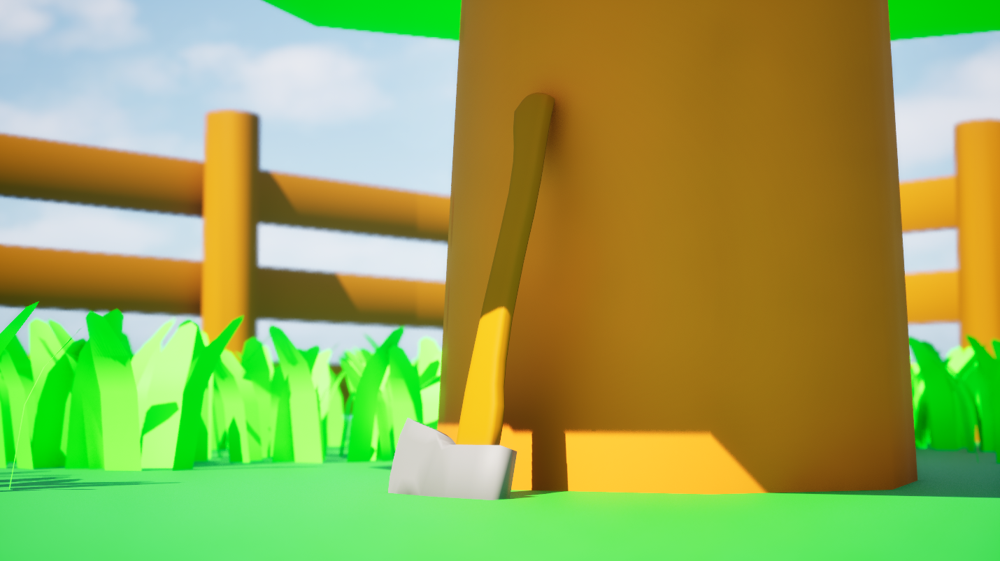
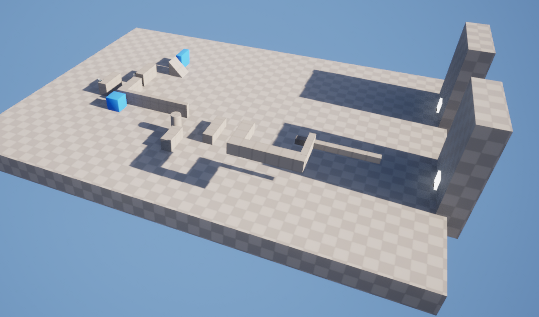

About Us
SmoorWorks is a small independent game development studio founded by Luuk Smoorenburg (14 y/o). The studio is dedicated to the design, development, and experimentation of original indie games, with a strong focus on learning, creativity, and hands-on production.
The goal of SmoorWorks is to explore game development as both a creative and technical process. Each project is approached as an opportunity to learn new skills, test ideas, and improve overall design and development abilities. Rather than focusing on large-scale production, the studio prioritizes creativity, iteration, and personal growth through making games.
Luuk is the main developer and works independently on most projects, currently developing a fully self-made game from initial concept to final implementation. This process includes game design, programming, and implementation of features, all driven by curiosity, problem-solving, and a passion for interactive experiences.
While development is primarily solo, Simon van Vorselen (14 y/o) occasionally provides feedback and advisory input during the process. This external perspective helps refine ideas, improve gameplay systems, and strengthen overall design decisions.
SmoorWorks operates with a simple but consistent principle: keep creating, keep improving, and keep exploring what games can become. Each project represents a step forward in skill, understanding, and creative expression within game development.



Studio Info
Developer: Luuk Smoorenburg
Focus: Indie games
Location: Netherlands
Status: Active development